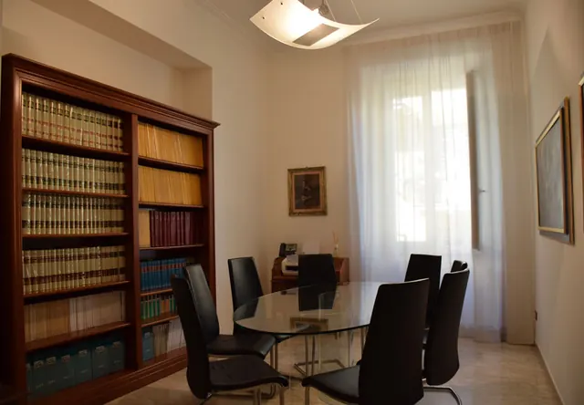
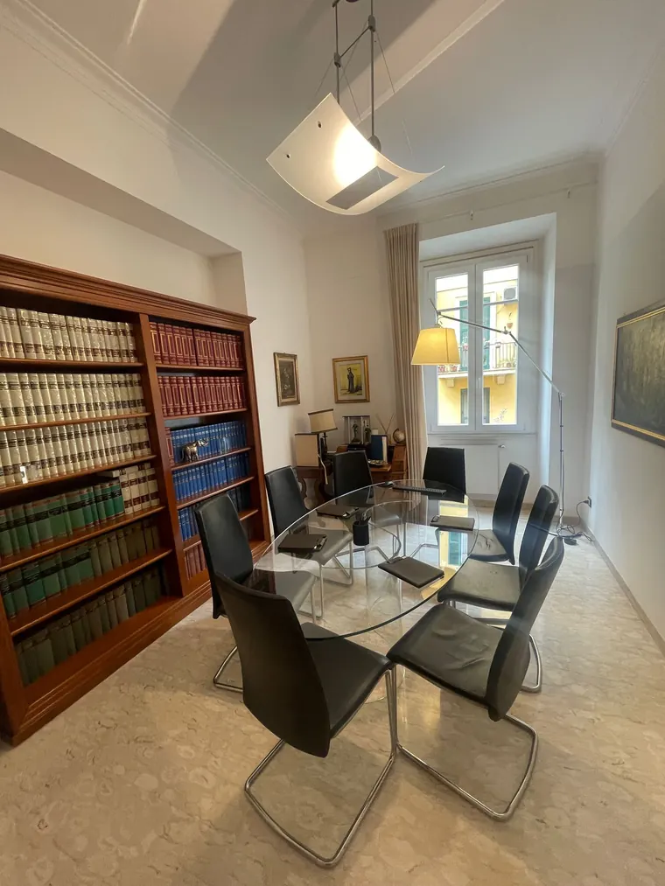
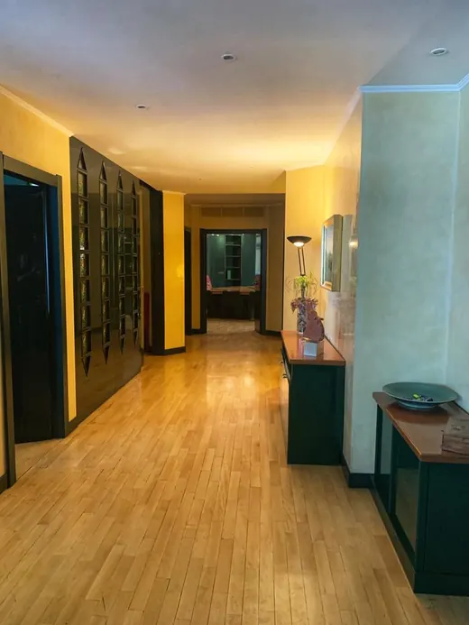
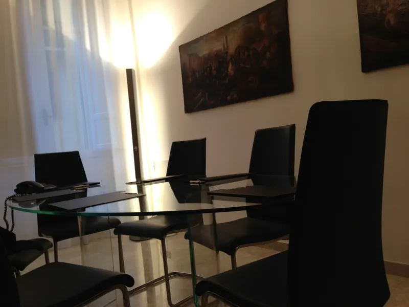
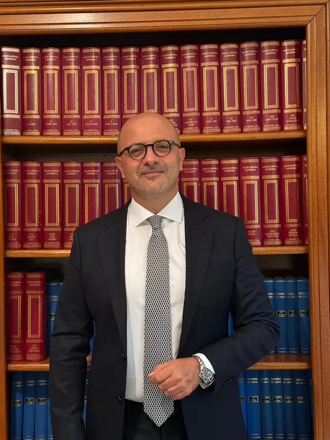
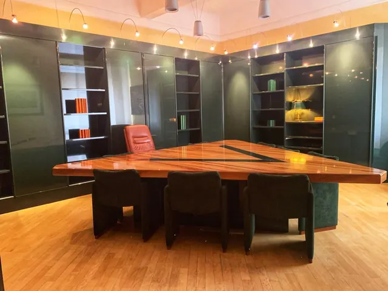

Sede principale
Roma
Corso Trieste 123Scala B, interno 6, secondo piano
Nel quartiere Trieste, non lontano dagli uffici giudiziari civili e penali, raggiungibile con i mezzi pubblici, dalle stazioni e dagli aeroporti.
Proposta di nuovo sito, anteprima non ufficiale.
Avvocati · Roma e Milano
Diritto penale e penale dell'economia, contenzioso civile, del lavoro e amministrativo. Assistenza a persone, imprese ed enti su tutto il territorio nazionale.

Lo studio
Lo Studio assiste una clientela privata e pubblica: persone, società ed enti. Accanto alla difesa nel processo penale, segue l'attività degli enti a tutto tondo, dai pareri in materia civile alla gestione del contenzioso con il personale, fino alla redazione dei modelli organizzativi in materia di sicurezza sul lavoro e di responsabilità amministrativa derivante da reato.
Cura inoltre il contenzioso civile, penale, amministrativo ed erariale, davanti alle giurisdizioni ordinarie e speciali, con la sede principale a Roma, nel quartiere Trieste, e una sede a Milano.
Il segreto professionale guida ogni passaggio, dal primo contatto alla conservazione degli atti.
Ogni incarico parte da una spiegazione semplice di strade possibili, tempi e costi.
Lo Studio segue i procedimenti negli uffici giudiziari di tutto il territorio nazionale.


L'attività dell'avvocato è un'obbligazione di mezzi: lo Studio si impegna nella cura diligente di ogni incarico, ma nessun professionista può garantire l'esito di un procedimento.
Aree di attività
Tutte le aree del diritto penale «classico», con l'assistenza della persona indagata o imputata e della persona offesa.
Difesa delle imprese e delle persone che vi lavorano nei procedimenti che nascono dall'attività economica.
Colpa professionale degli esercenti le professioni sanitarie, sia dal lato del medico e delle strutture pubbliche e private, sia dal lato del paziente.
Contenzioso civile in ogni giurisdizione, ordinaria o speciale, a favore di società, privati e organi delle procedure.
Assistenza a persone ed enti, anche locali, nei rapporti con la pubblica amministrazione e nel contenzioso tributario ed erariale.
Accompagnamento degli enti nella prevenzione: pareri e modelli organizzativi che riducono il rischio prima che diventi un processo.
L'avvocato

Laureato in Giurisprudenza all'Università di Roma «La Sapienza», con una tesi in diritto penale. Avvocato dal 2005, abilitato al patrocinio davanti alle giurisdizioni superiori dal 2017, esercita con continuità dal 2003 negli uffici giudiziari di tutto il territorio nazionale.
Si occupa in particolare di reati contro la pubblica amministrazione, di diritto penale dell'economia, di colpa professionale in ambito sanitario, di diritto penale del lavoro e dell'ambiente, di reati associativi e di misure di prevenzione antimafia. Segue la responsabilità degli enti prevista dal D.Lgs. 231/2001, tanto per chi è indagato quanto per le persone offese. È stato consulente della Commissione parlamentare di inchiesta sui fenomeni della contraffazione, della pirateria in campo commerciale e del commercio abusivo.
Relatore in convegni e corsi di aggiornamento organizzati, tra gli altri, dai Consigli dell'Ordine degli Avvocati di Velletri e di Latina e dall'Ordine dei Dottori Commercialisti e degli Esperti Contabili di Roma. Il 20 ottobre 2023, a Bari, ha tenuto la relazione sulla ricerca della prova in ambito internazionale e nelle operazioni transfrontaliere in un corso di aggiornamento professionale accreditato presso la Scuola Superiore dell'Avvocatura.
Sedi e contatti

Sede principale
Nel quartiere Trieste, non lontano dagli uffici giudiziari civili e penali, raggiungibile con i mezzi pubblici, dalle stazioni e dagli aeroporti.

Sede
Nel centro di Milano, non lontano dagli uffici giudiziari civili e penali.